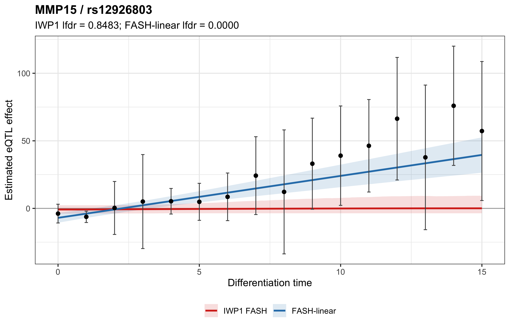
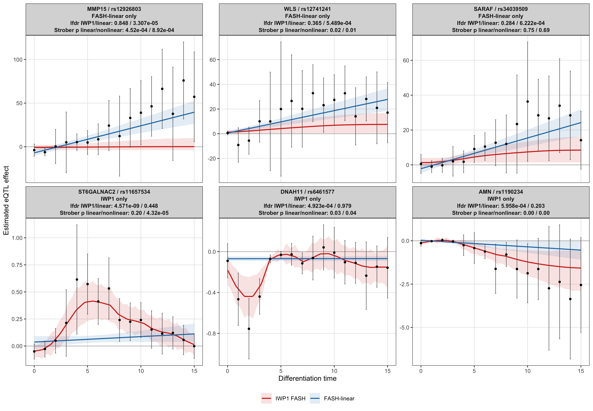
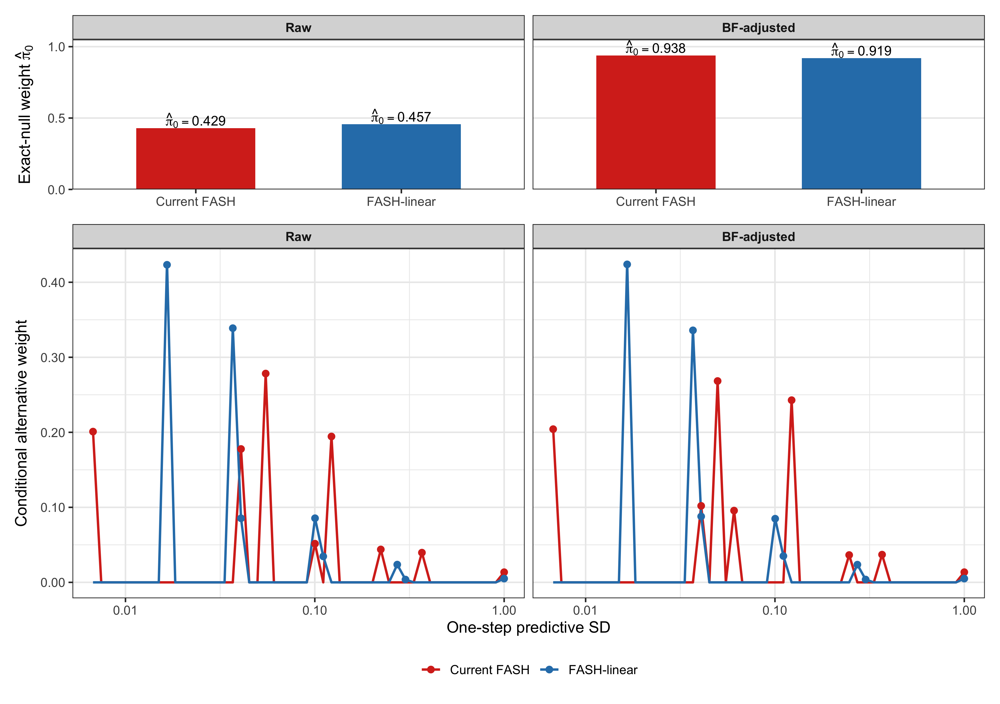
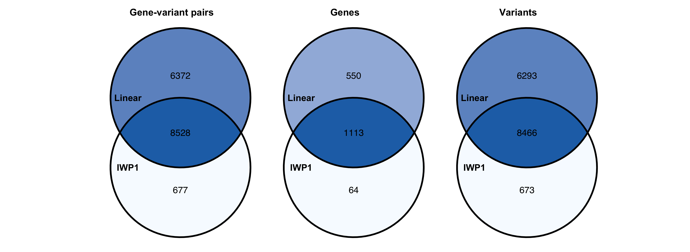
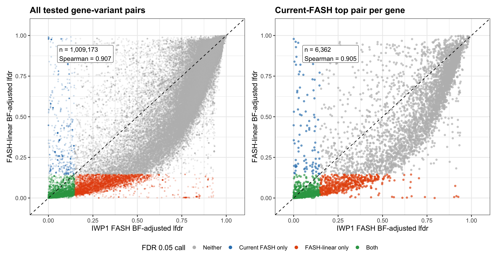

Last updated: 2026-08-11
Checks: 6 1
Knit directory: coderepo-local/
This reproducible R Markdown analysis was created with workflowr (version 1.7.2). The Checks tab describes the reproducibility checks that were applied when the results were created. The Past versions tab lists the development history.
The R Markdown is untracked by Git. To know which version of the R
Markdown file created these results, you’ll want to first commit it to
the Git repo. If you’re still working on the analysis, you can ignore
this warning. When you’re finished, you can run
wflow_publish to commit the R Markdown file and build the
HTML.
Great job! The global environment was empty. Objects defined in the global environment can affect the analysis in your R Markdown file in unknown ways. For reproduciblity it’s best to always run the code in an empty environment.
The command set.seed(20251109) was run prior to running
the code in the R Markdown file. Setting a seed ensures that any results
that rely on randomness, e.g. subsampling or permutations, are
reproducible.
Great job! Recording the operating system, R version, and package versions is critical for reproducibility.
Nice! There were no cached chunks for this analysis, so you can be confident that you successfully produced the results during this run.
Great job! Using relative paths to the files within your workflowr project makes it easier to run your code on other machines.
Great! You are using Git for version control. Tracking code development and connecting the code version to the results is critical for reproducibility.
The results in this page were generated with repository version c87957a. See the Past versions tab to see a history of the changes made to the R Markdown and HTML files.
Note that you need to be careful to ensure that all relevant files for
the analysis have been committed to Git prior to generating the results
(you can use wflow_publish or
wflow_git_commit). workflowr only checks the R Markdown
file, but you know if there are other scripts or data files that it
depends on. Below is the status of the Git repository when the results
were generated:
Ignored files:
Ignored: .DS_Store
Ignored: .Rhistory
Ignored: .Rproj.user/
Ignored: Rplots.pdf
Ignored: analysis/.DS_Store
Ignored: analysis/.Rhistory
Ignored: code/.DS_Store
Ignored: code/.Rhistory
Ignored: code/revision_simulations/.DS_Store
Ignored: data/appendixB/
Ignored: data/dynamic_eQTL_real/
Ignored: data/revision_simulations/
Ignored: data/toy_example/
Ignored: output/dynamic_eQTL_real/
Ignored: output/pdf/
Ignored: output/playwright/
Ignored: output/revision_simulations/
Untracked files:
Untracked: analysis/revision_internal_fash_cl_manuscript_impact.rmd
Untracked: analysis/revision_internal_fash_linear_real_data_ablation.rmd
Untracked: apps/
Untracked: code/revision_simulations/internal/covariance_estimation/run_design_propagated_null_correlation.R
Untracked: code/revision_simulations/internal/covariance_estimation/run_multigene_null_beta_covariance_exploration.R
Untracked: code/revision_simulations/internal/fash_cl_manuscript_impact/
Untracked: code/revision_simulations/internal/fash_linear_real_data_ablation/
Untracked: code/revision_simulations/shared/build_real_genotype_one_per_gene_cache.R
Untracked: code/revision_simulations/shared/real_genotype_one_per_gene.R
Untracked: code/revision_simulations/shared/test_linear_mixture_fash.R
Untracked: code/revision_simulations/shared/test_real_genotype_one_per_gene.R
Untracked: code/revision_simulations/shared/validate_r1_r2_linear_mixture_pairing.R
Untracked: code/revision_simulations/shared/validate_r1_r2_real_genotype_pairing.R
Unstaged changes:
Modified: analysis/dynamic_eQTL_real.rmd
Modified: analysis/index.Rmd
Modified: analysis/revision_combined_spiky_genotype_simulation.rmd
Modified: analysis/revision_genotype_level_simulation.rmd
Modified: code/revision_simulations/internal/covariance_estimation/run_global_pca_factor_visualization.R
Modified: code/revision_simulations/r1_random_bspline/reporting.R
Modified: code/revision_simulations/r1_random_bspline/run_random_bspline_mc_replication.R
Modified: code/revision_simulations/r2_spiky_transient/reporting.R
Modified: code/revision_simulations/r2_spiky_transient/run_combined_spiky_genotype_simulation.R
Modified: code/revision_simulations/r2_spiky_transient/run_spiky_transient_mc_replication.R
Modified: code/revision_simulations/shared/simulation_functions.R
Note that any generated files, e.g. HTML, png, CSS, etc., are not included in this status report because it is ok for generated content to have uncommitted changes.
There are no past versions. Publish this analysis with
wflow_publish() to start tracking its development.
The more comparable mixture prior does not reverse the main real-data count comparison, but it does change discovery membership. At cumulative-lfdr FDR 0.05 after BF adjustment, IWP1 FASH identifies 9,205 pairs, 1,177 genes, and 9,139 unique variants. The predictive-SD mixture FASH-linear comparator identifies 14,900 pairs, 1,663 genes, and 14,759 variants.
Relative to the historical profiled single-slab version, the new linear mixture has 965 fewer BF-adjusted calls (6.1%), and the all-pair lfdr rankings remain highly correlated (Spearman 0.983). In contrast, its raw count is higher by 15,128 pairs (33.6%). The prior migration is therefore modest after BF adjustment but material before it.
IWP1 FASH identifies 673 unique variants that FASH-linear misses, so flexibility produces a substantial distinct discovery set. However, FASH-linear identifies 6,293 variants that IWP1 FASH misses. These real-data counts and overlaps do not reveal which calls are true and cannot establish a power ordering between the covariance models.
The example is selected deterministically rather than for visual appearance: among BF-adjusted FASH-linear discoveries that are not called by IWP1 FASH, choose the pair with the smallest FASH-linear lfdr; break ties by the largest IWP1 lfdr and then pair key. This selects MMP15 / rs12926803.
plot_linear_only_example()
A strongest predictive-SD mixture FASH-linear-only example. Points and error bars show the time-specific effect estimates and plus or minus two adjusted standard errors. Curves and ribbons show posterior means and 95% intervals under BF-adjusted IWP1 FASH and FASH-linear.
For this pair, the BF-adjusted lfdr is 0.00003 under FASH-linear and 0.848 under IWP1. The fitted curves visualize how the rank-one linear and IWP covariance geometries pool the same observations differently. This deterministic example is diagnostic of model behavior; it is not external evidence that either call is true.
To avoid drawing a conclusion from one selected pair, the gallery below uses a symmetric deterministic rule: the three strongest BF-adjusted FASH-linear-only calls and the three strongest BF-adjusted IWP1-only calls, requiring a different gene for each panel. Each panel reports both FASH lfdr values and the linear/nonlinear Strober p-values.
plot_example_gallery()
Deterministic discordant examples. The top row contains strong FASH-linear-only calls; the bottom row contains strong IWP1-only calls. Points and error bars are time-specific estimates and plus or minus two adjusted standard errors; curves and ribbons are posterior means and 95% intervals.
The panels show that discordance is bidirectional. The two covariance models can concentrate and shrink the same time-specific estimates differently even after their scale grids, exact-null component, penalty, and BF procedure are aligned. These examples are diagnostics of model behavior, not independent validation of either discovery set.
The companion local Shiny app searches all 1,009,173 tested pairs by HGNC symbol, Ensembl ID, or rsID. After selecting a pair, checkboxes independently show the observed estimates, IWP1 FASH, FASH-linear, and posterior intervals. The plot displays raw and BF-adjusted lfdr for both FASH fits and both Strober p-values; the adjacent table also displays Strober eFDR and discovery calls.
Open the FASH trajectory explorer after starting the local app below.
Run from the workflowr project root:
Rscript --vanilla \
apps/fash_trajectory_explorer/build_explorer_cache.R
Rscript --vanilla -e \
'shiny::runApp("apps/fash_trajectory_explorer", host = "127.0.0.1", port = 7421, launch.browser = TRUE)'The compact search index is already retained in the project output directory, so the first command is needed only when an underlying fit or Strober table changes. App startup loads the large BF-adjusted IWP1 fit once; selected posterior trajectories are then computed on demand and cached in memory.
Both analyses use the same 1,009,173 time-specific-PC gene-variant effect estimates, t-adjusted standard errors, time grid, tested pairs, BF adjustment procedure, and cumulative-lfdr FDR threshold. For pair \(j\), the linear model is
\[ \beta_j(t) = a_j + d_j\frac{t-t_{j,\min}}{h}, \qquad h=1\text{ day}, \]
where the intercept \(a_j\) is unrestricted under every component. The null is the exact point mass \(d_j=0\), so \(H_0\) is a constant trajectory rather than a zero trajectory. Under the alternative,
\[ d_j \sim \sum_{k=1}^{51}\pi_k N(0,s_k^2), \]
and the complete 52-point grid is \(s_0=0\) plus the same 51 positive one-day
predictive-SD values used for IWP1. Both fits use the same exact-zero
component, null-favoring penalty of 10, and fashr BF-update
semantics. This alignment is on predictive scale, not covariance
geometry: FASH-linear induces a rank-one linear covariance across time,
whereas IWP1 induces its integrated-Wiener covariance.
grid <- default_revision_grid()
linear_fit_raw <- fit_linear_mixture_fash_from_stats(
statistics = statistics,
grid = grid,
pred_step = 1,
penalty = 10,
statistic_time_span = 15,
n_time = 16
)
linear_fit_bf <- BF_update_linear_mixture_fash(linear_fit_raw)
alpha <- 0.05The retained sufficient statistics use endpoint-scaled time \((t-t_{j,\min})/15\). The runner multiplies every one-day SD by 15 before the rank-one likelihood calculation, exactly bridging the reported one-day grid to that cached coefficient scale.
The BF update follows fashr exactly. It performs an
unpenalized full-grid mixture refit, drops the fitted null component and
renormalizes the positive weights to form the conditional alternative,
collapses the likelihood to null versus that alternative, computes each
Bayes factor, estimates the BF-controlled total null weight, and
rebuilds prior and posterior weights. Thus the BF-adjusted positive
weights are based on this conditional-alternative refit, not the raw
penalized fit’s conditional weights.
render_scrollable_table(
discovery_counts,
minimum_width = "820px"
)| method | adjustment | pair_count | gene_count | variant_count |
|---|---|---|---|---|
| Current FASH | Raw | 43860 | 3258 | 42893 |
| Current FASH | BF-adjusted | 9205 | 1177 | 9139 |
| FASH-linear | Raw | 60188 | 3863 | 58570 |
| FASH-linear | BF-adjusted | 14900 | 1663 | 14759 |
The predictive-SD mixture has 60,188 raw calls versus 43,860 for IWP1. After BF adjustment, the corresponding counts are 14,900 and 9,205. Count differences do not identify which model has higher power because the truth is unknown in these data.
plot_prior_weights()
Learned exact-null and conditional-alternative weights. The upper panels show the fitted exact-null weight for each method; the lower panels show weights on the shared positive one-day predictive-SD grid after conditioning on the alternative. Points mark active positive components.
render_scrollable_table(
prior_summary,
digits = 6L,
minimum_width = "640px"
)| method | adjustment | null_weight | active_nonnull_components | alternative_rms_predstep_sd |
|---|---|---|---|---|
| Current FASH | Raw | 0.428990 | 8 | 0.160179 |
| Current FASH | BF-adjusted | 0.938153 | 8 | 0.160065 |
| FASH-linear | Raw | 0.457235 | 8 | 0.095547 |
| FASH-linear | BF-adjusted | 0.919251 | 8 | 0.095532 |
The linear mixture uses eight active positive components in both fits. Its null weight changes from 0.4572 to 0.9193 after BF adjustment; the conditional-alternative RMS one-day SD is 0.0955 raw and 0.0955 after BF adjustment. Sharing a grid does not force the two covariance models to learn the same weights.
render_scrollable_table(
active_prior_weights,
digits = 6L,
minimum_width = "760px"
)| method | adjustment | component | predstep_sd | prior_weight |
|---|---|---|---|---|
| Current FASH | Raw | Exact null | 0.000000 | 0.428990 |
| Current FASH | Raw | Positive SD | 0.006738 | 0.114737 |
| Current FASH | Raw | Positive SD | 0.040762 | 0.101515 |
| Current FASH | Raw | Positive SD | 0.055023 | 0.158922 |
| Current FASH | Raw | Positive SD | 0.100259 | 0.029419 |
| Current FASH | Raw | Positive SD | 0.122456 | 0.111020 |
| Current FASH | Raw | Positive SD | 0.223130 | 0.025050 |
| Current FASH | Raw | Positive SD | 0.367879 | 0.022618 |
| Current FASH | Raw | Positive SD | 1.000000 | 0.007727 |
| Current FASH | BF-adjusted | Exact null | 0.000000 | 0.938153 |
| Current FASH | BF-adjusted | Positive SD | 0.006738 | 0.012630 |
| Current FASH | BF-adjusted | Positive SD | 0.040762 | 0.006305 |
| Current FASH | BF-adjusted | Positive SD | 0.049787 | 0.016598 |
| Current FASH | BF-adjusted | Positive SD | 0.060810 | 0.005916 |
| Current FASH | BF-adjusted | Positive SD | 0.122456 | 0.015019 |
| Current FASH | BF-adjusted | Positive SD | 0.246597 | 0.002253 |
| Current FASH | BF-adjusted | Positive SD | 0.367879 | 0.002286 |
| Current FASH | BF-adjusted | Positive SD | 1.000000 | 0.000839 |
| FASH-linear | Raw | Exact null | 0.000000 | 0.457235 |
| FASH-linear | Raw | Positive SD | 0.016573 | 0.229739 |
| FASH-linear | Raw | Positive SD | 0.036883 | 0.183884 |
| FASH-linear | Raw | Positive SD | 0.040762 | 0.046349 |
| FASH-linear | Raw | Positive SD | 0.100259 | 0.046389 |
| FASH-linear | Raw | Positive SD | 0.110803 | 0.018792 |
| FASH-linear | Raw | Positive SD | 0.272532 | 0.012848 |
| FASH-linear | Raw | Positive SD | 0.301194 | 0.002036 |
| FASH-linear | Raw | Positive SD | 1.000000 | 0.002729 |
| FASH-linear | BF-adjusted | Exact null | 0.000000 | 0.919251 |
| FASH-linear | BF-adjusted | Positive SD | 0.016573 | 0.034225 |
| FASH-linear | BF-adjusted | Positive SD | 0.036883 | 0.027125 |
| FASH-linear | BF-adjusted | Positive SD | 0.040762 | 0.007095 |
| FASH-linear | BF-adjusted | Positive SD | 0.100259 | 0.006851 |
| FASH-linear | BF-adjusted | Positive SD | 0.110803 | 0.002834 |
| FASH-linear | BF-adjusted | Positive SD | 0.272532 | 0.001906 |
| FASH-linear | BF-adjusted | Positive SD | 0.301194 | 0.000306 |
| FASH-linear | BF-adjusted | Positive SD | 1.000000 | 0.000406 |
The profiled single-Gaussian slab is shown here only as the historical version being replaced; it is not the active FASH-linear comparator.
render_scrollable_table(
linear_version_comparison,
digits = 6L,
minimum_width = "1500px"
)| adjustment | profile_pair_count | mixture_pair_count | pair_count_difference | profile_gene_count | mixture_gene_count | profile_variant_count | mixture_variant_count | intersection_pair_count | profile_only_pair_count | mixture_only_pair_count | pair_jaccard | pearson_lfdr | spearman_lfdr |
|---|---|---|---|---|---|---|---|---|---|---|---|---|---|
| Raw | 45060 | 60188 | 15128 | 3157 | 3863 | 44044 | 58570 | 45060 | 0 | 15128 | 0.748654 | 0.966044 | 0.983274 |
| BF-adjusted | 15865 | 14900 | -965 | 1657 | 1663 | 15731 | 14759 | 12655 | 3210 | 2245 | 0.698785 | 0.966071 | 0.983262 |
For raw lfdr, the mixture retains every historical profiled-slab discovery and adds 15,128 pairs; the set Jaccard index is 0.749. After BF adjustment, the total changes from 15,865 to 14,900, but membership is not identical: 3,210 pairs are historical-profile-only and 2,245 are mixture-only (Jaccard 0.699). The BF-adjusted lfdr Spearman correlation is 0.983.
render_scrollable_table(
overlap_summary,
digits = 4L,
minimum_width = "980px"
)| unit | current_count | linear_count | intersection_count | current_only_count | linear_only_count | union_count | jaccard |
|---|---|---|---|---|---|---|---|
| Gene-variant pairs | 9205 | 14900 | 8528 | 677 | 6372 | 15577 | 0.5475 |
| Genes | 1177 | 1663 | 1113 | 64 | 550 | 1727 | 0.6445 |
| Variants | 9139 | 14759 | 8466 | 673 | 6293 | 15432 | 0.5486 |
plot_overlap_venns()
BF-adjusted cumulative-lfdr FDR-0.05 overlap between IWP1 FASH and predictive-SD mixture FASH-linear at the gene-variant-pair, gene, and unique-variant levels.
The pair-level intersection is 8,528. IWP1 FASH contributes 677 exclusive pairs, whereas FASH-linear contributes 6,372.
The left panel contains all tested pairs. The right panel selects one pair per gene using only the minimum current-FASH BF-adjusted lfdr, then evaluates the same pair under FASH-linear.
plot_lfdr_scatter()
BF-adjusted lfdr comparison for all tested pairs and one current-FASH-selected top pair per gene. Colors indicate cumulative-lfdr FDR-0.05 discovery membership.
The all-pair Spearman correlation is 0.907; for current-FASH-selected top pairs it is 0.905.
The matched mixture makes FASH-linear substantially more comparable to IWP1 in effect-size prior, exact-null, penalty, and BF semantics. The BF-adjusted result is broadly stable relative to the historical profile version: the linear count falls by 965 (6.1%), and lfdr rankings remain highly correlated. The raw mixture count, however, is materially higher, and neither the historical nor IWP1 discovery memberships are identical to the new mixture membership.
The remaining scientific contrast is primarily covariance geometry, but the models also learn their mixture weights separately from the data. This real-data analysis has no known truth, so it cannot establish relative power or validate either model’s exclusive discoveries. Orthogonal evidence such as replication, functional enrichment, or prespecified shape diagnostics would be needed for that claim. The FASH-CL comparison remains deferred to its separate page and is outside this update.
Routine page builds read the retained cache and do not refit the million-pair comparator.
Rscript --vanilla \
code/revision_simulations/internal/fash_linear_real_data_ablation/\
run_fash_linear_real_data_ablation.R
Rscript --vanilla \
apps/fash_trajectory_explorer/build_explorer_cache.R
Rscript --vanilla \
code/revision_simulations/internal/fash_linear_real_data_ablation/\
build_example_gallery.R
Rscript --vanilla -e \
'workflowr::wflow_build("analysis/revision_internal_fash_linear_real_data_ablation.rmd", local = TRUE)'render_scrollable_table(runtime_summary, digits = 1L, minimum_width = "760px")| task | elapsed_seconds | pair_count | predictive_sd_grid_size |
|---|---|---|---|
| Full current-PC predictive-SD mixture FASH-linear real-data ablation | 85.8 | 1009173 | 52 |
The reporting loader requires a completed versioned run, the retained cache and compact-fit MD5 values, exact grid settings, and all 11 unchanged-IWP checks before exposing any page object.
render_scrollable_table(
unchanged_iwp_validation,
minimum_width = "620px"
)| check | pass |
|---|---|
| input_md5_datasets | TRUE |
| input_md5_current_iwp1_raw | TRUE |
| input_md5_current_iwp1_bf | TRUE |
| input_md5_historical_profile_raw | TRUE |
| input_md5_historical_profile_bf | TRUE |
| input_md5_historical_profile_cache | TRUE |
| pair_count_and_order | TRUE |
| matched_grid_predstep_penalty | TRUE |
| raw_discovery_counts | TRUE |
| bf_discovery_counts | TRUE |
| historical_bf_lfdr | TRUE |
render_scrollable_table(fit_provenance, minimum_width = "1280px")| label | path | bytes | modified | md5 |
|---|---|---|---|---|
| linear_raw | /Users/ziangzhang/Desktop/FASH/fash-revision/coderepo-local/output/revision_simulations/internal/fash_linear_real_data_ablation_mixture_predstep1_penalty10/linear_fit_raw.rds | 69252241 | 2026-08-11 17:01:50 UTC | 71d1df8a2d03c3da1f6cecfa2484ba29 |
| linear_bf | /Users/ziangzhang/Desktop/FASH/fash-revision/coderepo-local/output/revision_simulations/internal/fash_linear_real_data_ablation_mixture_predstep1_penalty10/linear_fit_bf.rds | 74627788 | 2026-08-11 17:02:25 UTC | e5a4ba559e6386233494e7ff746d9b87 |
render_scrollable_table(input_provenance, minimum_width = "1420px")| label | path | bytes | modified | md5 |
|---|---|---|---|---|
| datasets | /Users/ziangzhang/Desktop/FASH/fash-revision/coderepo-local/output/dynamic_eQTL_real/datasets_corrected.RData | 297966635 | 2026-01-20 18:00:33 UTC | 689d8c8e63844b1a9d7814d468533dd8 |
| current_iwp1_raw | /Users/ziangzhang/Desktop/FASH/fash-revision/coderepo-local/output/dynamic_eQTL_real/fash_fit1_all.RData | 576110361 | 2026-01-20 17:57:38 UTC | e8aa07c1ebbd600b5dd192e5e91cb794 |
| current_iwp1_bf | /Users/ziangzhang/Desktop/FASH/fash-revision/coderepo-local/output/dynamic_eQTL_real/fash_fit1_update.RData | 581122554 | 2026-01-20 20:29:11 UTC | af46b39a04b241cf1e6116a645dbcc3e |
| gene_map | /Users/ziangzhang/Desktop/FASH/fash-revision/coderepo-local/output/dynamic_eQTL_real/cache_gene_map.rds | 50218 | 2026-01-20 21:18:50 UTC | 3b869a545b734496af235decaa6648e6 |
| historical_profile_raw | /Users/ziangzhang/Desktop/FASH/fash-revision/coderepo-local/output/revision_simulations/internal/fash_linear_real_data_ablation/linear_fit_raw.rds | 32047293 | 2026-08-10 22:38:14 UTC | 50ebfabca31b4b6aad93428768212fd5 |
| historical_profile_bf | /Users/ziangzhang/Desktop/FASH/fash-revision/coderepo-local/output/revision_simulations/internal/fash_linear_real_data_ablation/linear_fit_bf.rds | 37257133 | 2026-08-10 22:38:16 UTC | 54488e51ad6b737ee3c1741d9daafa35 |
| historical_profile_cache | /Users/ziangzhang/Desktop/FASH/fash-revision/coderepo-local/output/revision_simulations/internal/fash_linear_real_data_ablation/analysis_cache.rds | 10962792 | 2026-08-10 22:18:02 UTC | f2fede0d8590e35c3524dd07906ce6f4 |
| helper | /Users/ziangzhang/Desktop/FASH/fash-revision/coderepo-local/code/revision_simulations/internal/fash_linear_real_data_ablation/fash_linear_real_data_helpers.R | 20070 | 2026-08-11 16:53:00 UTC | 1c4c195fcc0724fe9763d2b49adad24f |
| shared_functions | /Users/ziangzhang/Desktop/FASH/fash-revision/coderepo-local/code/revision_simulations/shared/simulation_functions.R | 279352 | 2026-08-11 16:53:13 UTC | d9748fb9cffa5cfa0fa0fa1f917a6954 |
| runner | /Users/ziangzhang/Desktop/FASH/fash-revision/coderepo-local/code/revision_simulations/internal/fash_linear_real_data_ablation/run_fash_linear_real_data_ablation.R | 30676 | 2026-08-11 17:01:04 UTC | 850c45a217b1f9f7ba98a99edf0532bd |
| historical_sufficient_statistics | /Users/ziangzhang/Desktop/FASH/fash-revision/coderepo-local/output/revision_simulations/internal/fash_linear_real_data_ablation/sufficient_statistics.rds | 43366324 | 2026-08-10 22:38:02 UTC | 750078337aed6e35369c759ddd0ddd0a |
sessionInfo()R version 4.5.1 (2025-06-13)
Platform: aarch64-apple-darwin20
Running under: macOS Sequoia 15.6.1
Matrix products: default
BLAS: /System/Library/Frameworks/Accelerate.framework/Versions/A/Frameworks/vecLib.framework/Versions/A/libBLAS.dylib
LAPACK: /Library/Frameworks/R.framework/Versions/4.5-arm64/Resources/lib/libRlapack.dylib; LAPACK version 3.12.1
locale:
[1] C.UTF-8/C.UTF-8/C.UTF-8/C/C.UTF-8/C.UTF-8
time zone: America/Chicago
tzcode source: internal
attached base packages:
[1] stats graphics grDevices utils datasets methods base
loaded via a namespace (and not attached):
[1] sass_0.4.10 generics_0.1.4 stringi_1.8.7
[4] digest_0.6.39 magrittr_2.0.5 evaluate_1.0.5
[7] grid_4.5.1 RColorBrewer_1.1-3 fastmap_1.2.0
[10] rprojroot_2.1.1 workflowr_1.7.2 jsonlite_2.0.0
[13] ggrastr_1.0.2 promises_1.5.0 scales_1.4.0
[16] jquerylib_0.1.4 cli_3.6.6 rlang_1.2.0
[19] withr_3.0.2 cachem_1.1.0 yaml_2.3.12
[22] otel_0.2.0 ggbeeswarm_0.7.3 tools_4.5.1
[25] dplyr_1.1.4 ggplot2_4.0.1 httpuv_1.6.16
[28] vctrs_0.7.3 R6_2.6.1 lifecycle_1.0.5
[31] git2r_0.36.2 stringr_1.6.0 fs_1.6.6
[34] vipor_0.4.7 pkgconfig_2.0.3 beeswarm_0.4.0
[37] pillar_1.11.1 bslib_0.9.0 later_1.4.4
[40] gtable_0.3.6 glue_1.8.1 Rcpp_1.1.1-1.1
[43] xfun_0.55 tibble_3.3.0 tidyselect_1.2.1
[46] rstudioapi_0.17.1 knitr_1.50 dichromat_2.0-0.1
[49] farver_2.1.2 htmltools_0.5.9 patchwork_1.3.2
[52] rmarkdown_2.30 labeling_0.4.3 ggVennDiagram_1.5.4
[55] Cairo_1.7-0 compiler_4.5.1 S7_0.2.1